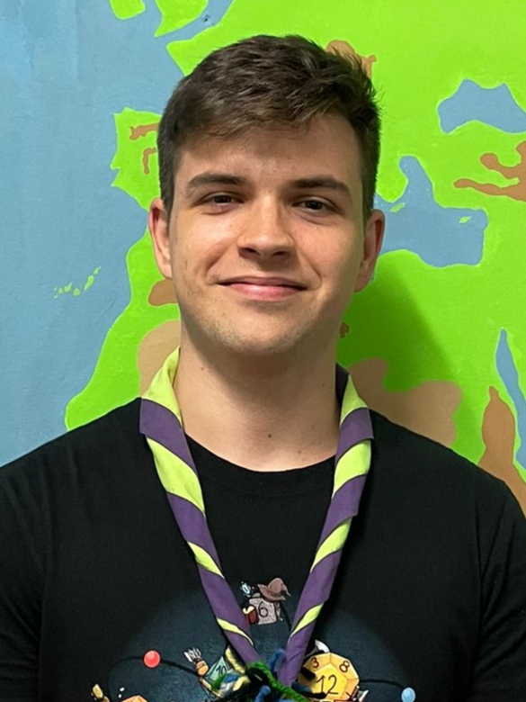

GUILLEM TURMO - PRODUCER

Hi! My name is Guillem Turmo and I was the Producer of The Mandalorian: Sands of Arvala. I already had some experience with team management since I am also part of a "esplai", nevertheless, It was my first time managing a project this ambitious with so many people. I have always loved being part of the whole process of development of a game, from designing and exploring the concept, to programming the different main elements, and even some art although it is where my skills lack the most. Being the Producer allowed me to take part and keep a global vision of the project, even though ironically at the same time I did not get to actually produce any part of the game.
However, despite the fact that it took me a while to find the most suitable way to manage and organize the project, I believe that I was able to contribute a lot behind the scenes. Especially with providing a calm and positive point of view during a time that has created so much toxicity and made people lose their composture from time to time. I firmly believe that my role as a Producer was not being a controlling boss, but a helpful leader that keeps the project on the agreed track.
PROJECT CONTRIBUTION
Project direction & Decision-making
As I mentioned earlier, I tried making everyone responsible for the decisions affecting their tasks and kept most of the global decisions on the hands of the team. Nevertheless, there were some occasions that for the sake of efficiency and keeping a cohesive vision of the project, the management team had to step up and take those decisions. Mantaining the project's cohesion went from redirecting gameplay decisions, to creating templates for documents and presentations, to making sure the conventions established are followed.
Production Plan
Description of the methodology and tools we used during the whole project, as well as, a contingency plan for those occasions where something could go wrong or unexpected.
Session Management
I was in charge of leading the twice weekly sessions with the whole team, which meant preparing the different items to be discussed, communicating them to team, and moderating the session. This also implied putting together presentations if needed, and leading any other extraordinary meeting where there was not someone else established as the responsible (retrospectives, extra classes, etc).
Communication Management
Because of the covid situation and its regulations, staying communicated was one of the hardest tasks. I was in charge of managing the discord server, which meant separating everything in categories, keeping main channels clean & clear, and making sure all of the information was accessible for everyone and nothing got lost.
Project Organization
Apart from the Github repository where mainly programmers worked on, all of the documents, information, and assets was located in a shared Drive folder which I was in charge of keeping well-organized.
Milestone Set Up
At the end of every milestone, I had to make sure everything was ready for the team to get on with the next one as quickly as possible, meaning that every Scrum Team should have a HacknPlan board to fill, the Milestone goals should be listed and detailed, and all of the documents and folders needed should be created.
Milestone Objectives
At the start of every milestone, the management team gathered to evaluate the requirements given to us to then adapt them to our scope and select their priority. Once we had done that, we created a new document where all of the goals were divided and specified.
Scrum Management
Once the objectives were set, we divided them into different Scrum Teams to facilitate interdepartmental communication, and then assigned each task to a member of the team.
Lead Management
The task management of every department was mainly delegated to each Lead, however, it was my task to make sure they were keeping right track of their department and to evaluate if we needed them to take more part on either the management or production part of their responsibilities.
Team Management & Check-in
Although the task management was the Lead's responsibility, I still kept a general track of the progress of the tasks, and more importantly, stepped up in case there was any kind of problem with one or more members of the team. For example, one of my main task in relation to this was finding ways of keeping the team's motivation up and being aware if anyone on the team was having personal issues that could affect their work in order to atempt finding a solution.
Evaluation
At the end of every Milestone, my responsibility was filling up an evaluation form were I evaluated the work done in that milestone and gave our tutors an insight about the work dynamic of every member of the team. With the management team, we agreed that instead of doing this task alone, it made more sense for every Lead to evaluate their department, leaving me to evaluate the management team (including myself).
Milestone Delivery
At the end of every milestone, we presented the work done and delivered a release alongside any documents created or expanded. My responsibility was setting everything up for everyone to properly present their work and making sure everyone was doing it in a cohesive manner.
Art Task Management
During the development of the project, we had many problems with the Art department not reaching their goals, which had us going back and forward with Pau Fiol to manage the department's task while he was more hands-on the project. However, it was clear we needed him to be fully on producing not managing, so in order to not invest in management another artist, I took up the task-related responsibility and placed Enric-G Durán as the Lead but only as the artistic direction mentor
Post-Mortem
After finishing the project we did a finally retrospective of the project. My job was to summarize and fairly transfer all of the ideas exposed by the team into main points to be displayed in the webpage.